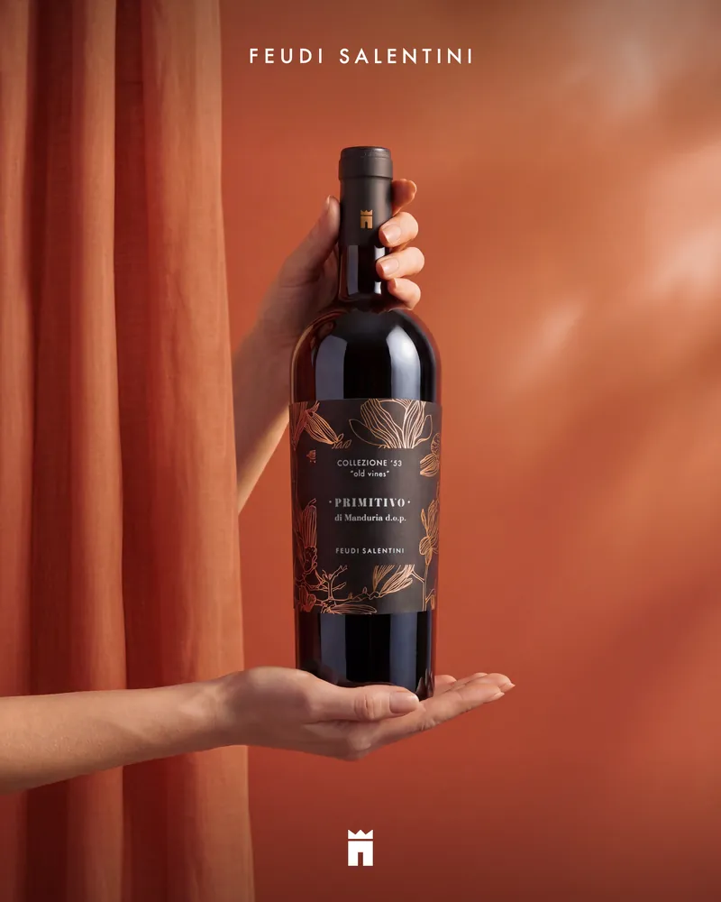
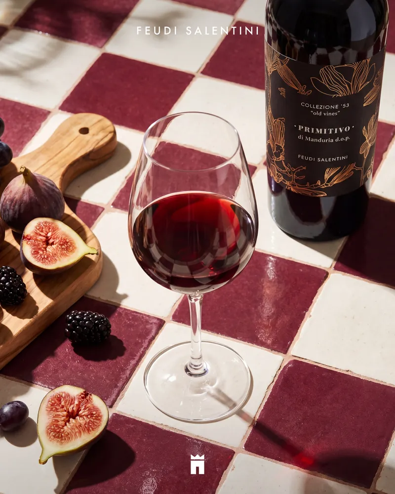
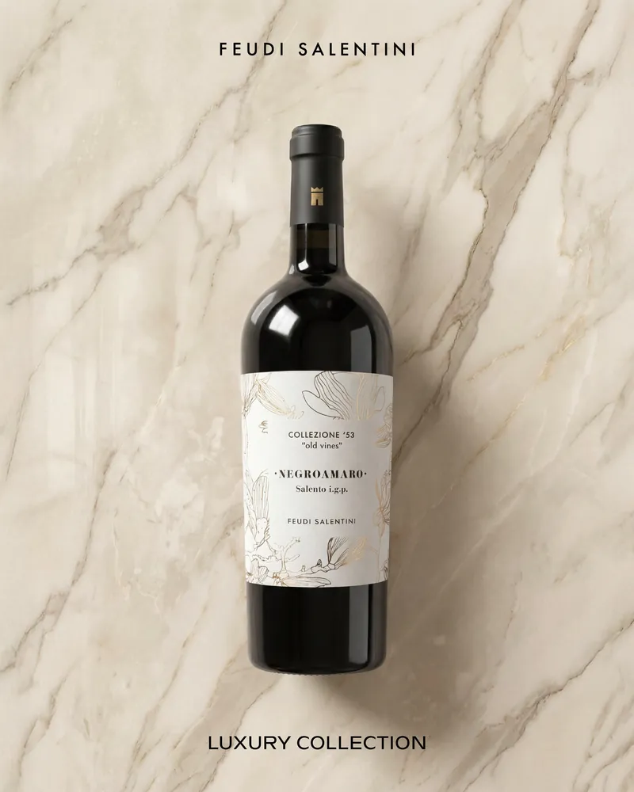
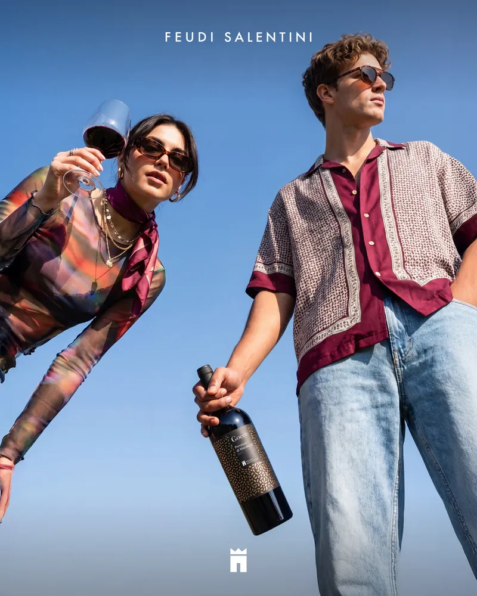

The Luxury Collection
L’ora esatta del Primitivo
Luxury Collection
In Salento arriva sempre un momento dell’estate in cui il caldo smette di essere una stagione e diventa una forza. Entra nelle vigne, si posa sulle bucce, rallenta l’acqua, stringe il frutto e lo porta verso una forma più esatta. È un passaggio che il Primitivo di Manduria conosce da sempre, come se ogni anno aspettasse proprio quell’ora per decidere fino in fondo chi essere. La Collezione Luxury nasce lì, dentro questa concentrazione severa e luminosa, quando il grappolo trattiene il superfluo e lascia emergere soltanto la parte più piena, più matura, più necessaria di sé. Ne viene fuori un vino che ha la calma delle cose riuscite, la compattezza di ciò che non ha bisogno di alzare la voce per essere riconosciuto.



